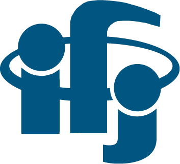

Kursy i szkolenia
30.09.2020, Szkolenie pt.: "Widoczność ma znaczenie - jak dbać o swój profil w bazie Scopus"
organizowane przez Elsevier , On-line.
29.09.2020, Szkolenie pt.: "Współpracuj i obserwuj trendy w badaniach" organizowane przez
Elsevier , On-line.
28.09.2020, Szkolenie pt.: "Co mogą powiedzieć nam publikacje" organizowane przez
Elsevier , On-line.
28.11.2019, Szkolenie pt.: "Automotywacja do pracy naukowej" organizowane przez
Centrum Transferu Technologii, Politechnika Krakowska.
27.11.2019, Szkolenie pt.: "Planowanie projektu B+R i budowanie relacji z firmą" organizowane przez Centrum Transferu Technologii, Politechnika Krakowska.
11.05.2018, Warsztaty pt.: "Superkomunikacja - kluczowa kompetencja na drodze do sukcesu"
- Marcin Juchniewicz.
6.10.2018, Warsztaty pt.: "Bądź kreatorem własnej rzeczywistości - zacznij marzyć"
- Marcin Juchniewicz.
10.06.2017, Warsztaty pt.: "Pasja wystąpień publicznych"
- Damian Wilpert.
07.11.2017 - Udział w Szkoleniu "Granty Europejskiej Rady ds. Badań Naukowych", Politechnika Krakowska, sala GIL, g. 10.00-13.00.
Kurs kierownika wypoczynku dzieci i młodzieży, organizowany przez Anikino
Kurs kierownika wycieczek, organizowany przez Anikino
- 